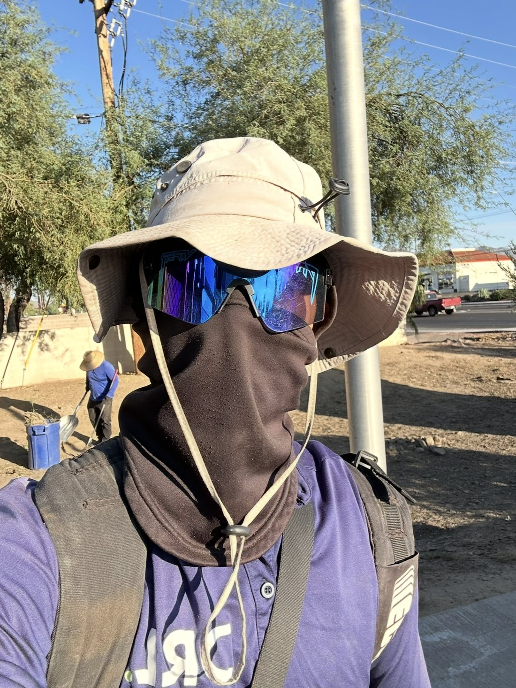

Quién cuida tu jardín
Un camino que empezó podando árboles en Arizona.

Soy Arturo Millán. Empecé en Tucson, Arizona, trabajando para Desert Rain Landscaping Services. Ahí aprendí las bases del oficio, pero fue después, trabajando con AJ Raglow de Vivan Los Árboles, donde gané la mayor parte de mi experiencia en trepa comercial: subir palmas y árboles de gran altura con arnés y técnica, no con escalera y machete.
Con esa experiencia me moví a Phoenix, donde seguí trepando ya bajo mi propia empresa, The Hive Outdoor Services, junto con un grupo de socios — atendiendo jardines que no aceptaban un trabajo a medias.
Hoy vivo entre San Carlos y Guaymas y pongo esos años de experiencia al servicio de tu casa — atendiendo en español e inglés a la comunidad de la zona, y tratando cada patio como si fuera el mío.
Desert Rain Landscaping Services
Las bases del oficio: mantenimiento de jardines y primer contacto con el trabajo en altura.
AJ Raglow — Vivan Los Árboles
Donde gané la mayor parte de mi experiencia en trepa comercial y poda de altura con equipo de rappel.
The Hive Outdoor Services
Mi propia empresa, con un grupo de socios — poda de altura y jardinería para clientes exigentes.
De regreso a casa, con esa misma experiencia
Servicio bilingüe para familias mexicanas y para la comunidad americana de la región.